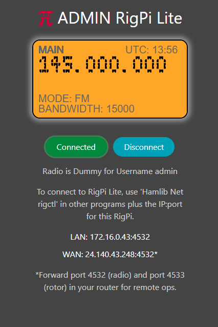

|
<< Click to Display Table of Contents >> Navigation: Views > RigPi Lite |
RigPi Lite provides a low cpu-utilization connection for other programs that use Hamlib to control radios and rotors. Examples include RigPi, WSJT-X and Fldigi.

RigPi normally uses 25-30% of a Raspberry Pi CPU resources. RigPi Lite uses less than 1%.
Starting RigPi Lite
RigPi Lite uses the same login credentials as RigPi and connects through port 80. Set up the account you want to use for RigPi Lite using the RigPi Account, Advanced Settings and Rotor Settings. Once you are done, check that RigPi controls the radio and rotor correctly. Disconnect the radio in RigPi, then start RigPi Lite. In your browser navigation bar, use the URL:
rigpi4.local/lite
or the LAN/WAN shown in the Lite window.
If you are operating through a router and have redirected port 80, you must take that into account when configuring RigPi. For example, if your router forwards port 8008 to port 80, start RIgPi Lite by specifying the port.
rigpi4.local:8008/lite
A start-up icon for RigPi Lite is located on the Raspberry Pi Desktop and in the Chromium App menu.
1.Enter the Username for the account you want to use, for example, 'admin.' The Username is case-insensitive.
2.If you have assigned a Password, enter it in the Password box.
3.Click Login (or press Enter).
Lite Window
in the Lite window, click Connect or press Enter to connect.
The Lite window shows the current Main frequency, mode, bandwidth, UTC time, and Transmit status. The display is updated every 2 seconds.
Other helpful information is provided below the buttons.
1.The radio name and Username
2.The LAN and WAN <IP>:<port> for the connection.
If you want WSJT-X to use the RigPi Lite connection, and you are using the same LAN, use the LAN data. If connecting from another location, use the WAN data. To use the WAN connection, be sure to forward the appropriate port in your router. In the image above, you would forward port 4532 in your router. To use your rotor, forward the port one higher, or 4533.
The RigPi Lite window does not use proprietary widgets, but uses the HTML5 canvas. RigPi Lite takes the first step to replacing the proprietary widgets in RigPi.
Connecting to RigPi Lite
Using a second RigPi:
Use the <IP>:<port> shown on the RigPi Lite window. In Advanced Settings, use Hamlib Net Rigctl, and R Port 172.16.0.43:4534. This will connect to RigPi account 2. Replace the IP with your IP. Take into account router redirection if you are connecting from a remote location.
WSJT-X:
If WSJT-X is running on the same RigPi as RigPi Lite, use 127.0.0.1:4534 in the WSJT-X Radio->Network Server box to connect to the radio for account 2. If WSJT-X is running at a remote location, use he WAN IP and port shown in the Lite window. WSJT-X connects through the specified port, so you must port forward that port in your router.
Rotor control:
In RigPi, set the Rotor to Hamlib Net rotctl.
Use the LAN or WAN on the RigPi Lite window to connect to the RigPi Lite rotor control. The port in RigPi Rotor Settings is one higher than the port shown in the Lite window. If you are using port 4534 for the radio, use port 4535 for the rotor.
RigPi Lite limitations
1.No radio or rotor control, control comes from another program. RigPi Lite is display-only.
2.Only CAT CW is supported, your radio must support CW by CAT.
3.No logging to or from other programs.
4.Auto power on and auto power off are determined from your selections in RigPi Advanced Radio Settings.